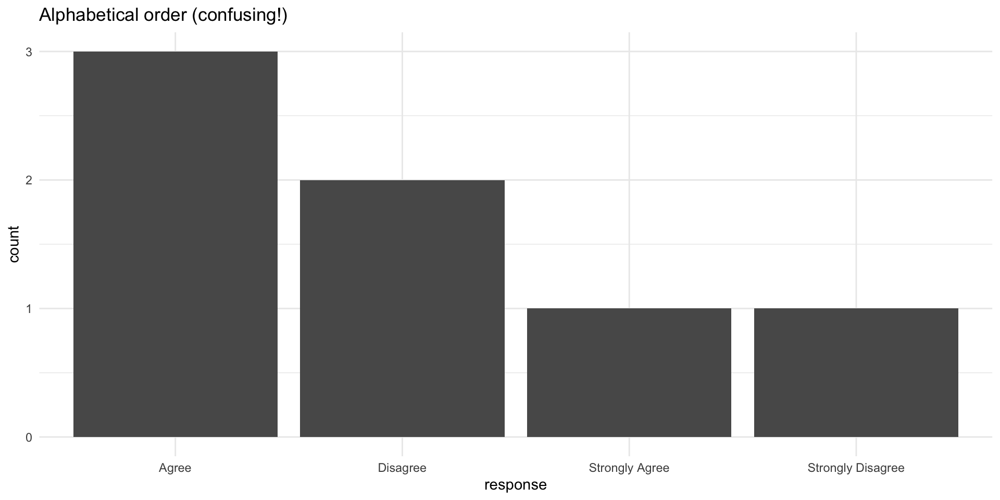
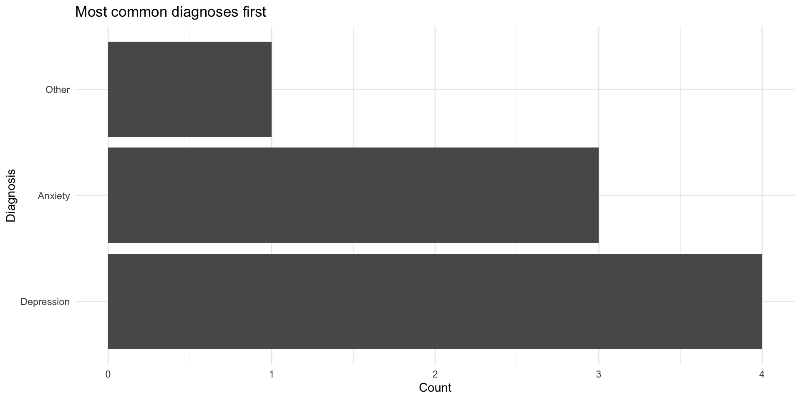

participant_name <- "Jane Doe"
diagnosis <- "Major Depressive Disorder"
feedback <- "The task was confusing"Strings & Factors
PSY 410: Data Science for Psychology
Dr. Sara Weston
2026-05-06
Strings: The basics
What are strings?
Strings are text data — anything in quotes:
In R, the stringr package (part of tidyverse) provides tools for working with strings.
All stringr functions start with str_.
Creating and combining strings
[1] "JaneDoe"[1] "Jane Doe"String length
Changing case
[1] "male" "female" "male" "female" "male" [1] "MALE" "FEMALE" "MALE" "FEMALE" "MALE" [1] "Male" "Female" "Male" "Female" "Male" Essential for cleaning demographic data!
Trimming whitespace
Survey data often has extra spaces:
Psychology example: Cleaning demographics
Detecting patterns
str_detect() checks if a pattern is present:
[1] TRUE FALSE TRUE FALSECase-insensitive detection
Patterns are case-sensitive by default:
Replacing text
[1] "Very Disagree" "Disagree" "Very Agree" "Agree" [1] "Very Disagree" "Disagree" "Very Agree" "Agree" Multiple replacements
[1] "Major Depressive Disorder" "Generalized Anxiety Disorder"
[3] "Major Depressive Disorder" "Obsessive-Compulsive Disorder"
[5] "Generalized Anxiety Disorder" Extracting parts of strings
[1] "001" "002" "010" "123"When you need more: Regular expressions
Regular expressions (regex) are powerful pattern matching tools.
Examples:
\\dmatches digits\\smatches whitespace.matches any character+means “one or more”*means “zero or more”
Note
Regex is powerful but complex. For this course, stick to simple patterns. When you need more, check R4DS Ch 14 or regex101.com.
Pair coding break
Your turn: Clean text data
You have messy survey responses:
- Clean
genderto lowercase with no extra spaces - Clean
commentto title case with no extra spaces - Create a logical column
is_negativethat is TRUE if the comment contains “long” or “confusing” (case-insensitive) - Filter to only negative comments
Time: 10 minutes
Factors
What are factors?
Factors are R’s way of representing categorical data with a fixed set of possible values.
Notice the Levels line — those are the possible categories.
Why use factors?
- Memory efficient — R stores categories once, not repeatedly
- Prevent typos — Can’t accidentally add invalid categories
- Control order — Specify the order for plots and tables
- Model requirements — Many statistical models require factors
Creating factors
[1] Control Treatment Treatment Control
Levels: Control TreatmentOrder matters!
[1] Agree Disagree Strongly Agree Agree
[5] Strongly Disagree
Levels: Agree Disagree Strongly Agree Strongly DisagreeWhy order matters: Example
Why order matters: Example

Fixed with factor ordering
Fixed with factor ordering

Forcats: Factor tools
The forcats package (part of tidyverse) provides functions for working with factors.
All forcats functions start with fct_.
Key functions:
fct_relevel()— manually reorder levelsfct_reorder()— reorder by another variablefct_infreq()— order by frequencyfct_recode()— rename levelsfct_collapse()— combine levels
fct_relevel(): Manual reordering
[1] High School Bachelor's Master's High School
Levels: Bachelor's High School Master'sfct_reorder(): Order by another variable
Extremely useful for plots!
fct_reorder() in action
fct_reorder() in action

fct_infreq(): Order by frequency
fct_infreq() in plots
fct_infreq() in plots

fct_recode(): Rename levels
fct_collapse(): Combine levels
Useful for grouping rare categories:
[1] Depression Anxiety Anxiety Anxiety Anxiety Depression Anxiety
[8] Anxiety
Levels: Anxiety DepressionPsychology example: Recoding demographics
demo_data <- tibble(
age_group = c("18-25", "26-35", "18-25", "36-45", "26-35", "46+"),
education = c("HS", "BA", "BA", "MA", "HS", "PhD")
)
demo_data |>
mutate(
# Order age groups logically
age_group = factor(age_group, levels = c("18-25", "26-35", "36-45", "46+")),
# Expand education codes
education = fct_recode(factor(education),
"High School" = "HS",
"Bachelor's" = "BA",
"Master's" = "MA",
"Doctorate" = "PhD"
)
)# A tibble: 6 × 2
age_group education
<fct> <fct>
1 18-25 High School
2 26-35 Bachelor's
3 18-25 Bachelor's
4 36-45 Master's
5 26-35 High School
6 46+ Doctorate Dropping unused levels
After filtering, factors keep old levels:
[1] Depression
Levels: Anxiety Depression OtherCommon factor issues
Problem 1: Factors created from numbers
Common factor issues
Problem 2: Factors behave differently than strings
[1] red blue <NA>
Levels: blue redSolution: Convert to character first, or use fct_expand() to add levels.
End-of-deck exercise
Practice: Clean and visualize survey data
You have messy Likert scale data:
- Clean the
responsevariable to title case - Convert
responseto a factor with logical ordering - Create a bar chart showing response counts for each question
- Use
facet_wrap()to make separate panels for each question - Bonus: Use
fct_infreq()to order responses by overall frequency
Wrapping up
String functions cheat sheet
| Function | Purpose |
|---|---|
str_c() |
Combine strings |
str_length() |
Get string length |
str_to_lower(), str_to_upper() |
Change case |
str_trim(), str_squish() |
Remove whitespace |
str_detect() |
Find pattern |
str_replace(), str_replace_all() |
Replace pattern |
str_sub() |
Extract substring |
Factor functions cheat sheet
| Function | Purpose |
|---|---|
factor() |
Create a factor |
fct_relevel() |
Manually reorder levels |
fct_reorder() |
Order by another variable |
fct_infreq() |
Order by frequency |
fct_recode() |
Rename levels |
fct_collapse() |
Combine levels |
fct_drop() |
Remove unused levels |
Key takeaways
- Strings are text — use
stringr::str_*()functions to manipulate - Always clean string data — case, whitespace, typos
- Factors are categorical data with fixed levels
- Factor order matters for plots and tables
- Use forcats (
fct_*()) to manipulate factors - Order factors logically — not alphabetically
- When in doubt, check the data type with
class()orglimpse()
Before next class
📖 Read:
- R4DS Ch 19: Joins
✅ Do:
- Submit Assignment 6
- Check your final project data for string/factor issues
- Practice cleaning demographic variables
Questions?
See you Monday for joins!
PSY 410 | Session 12